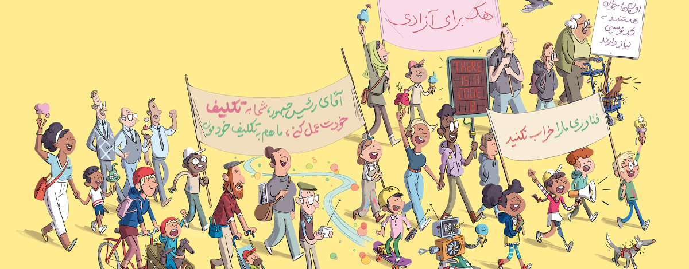
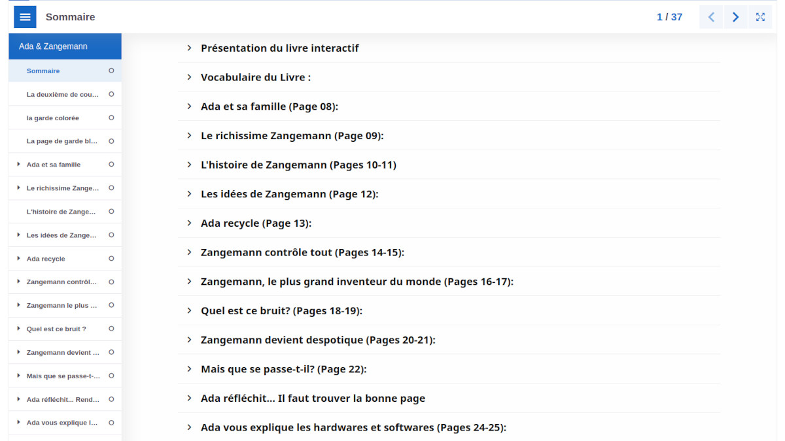
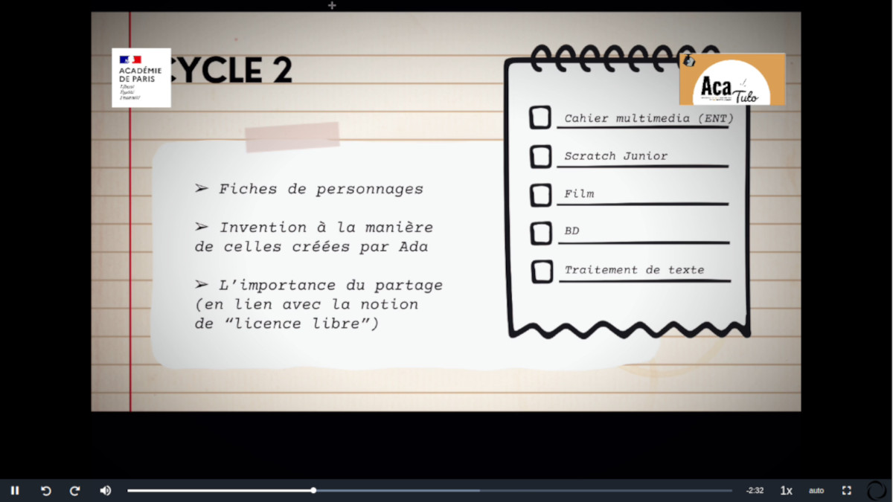
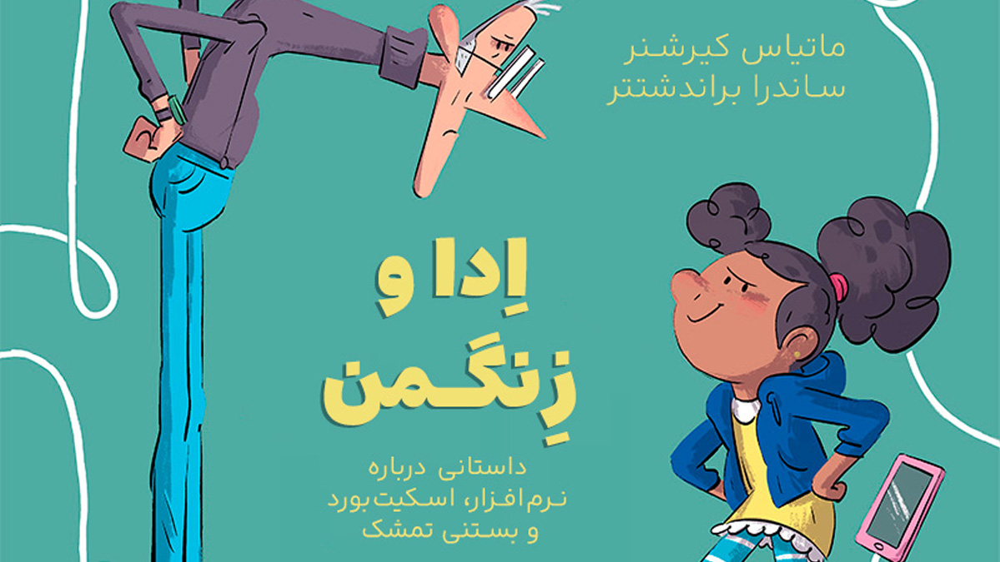

منابع آموزشی
اینجا همهٔ چیزهایی را جمع کردهایم که برای کار با داستان اِدا و زِنگمَن در کلاس یا خانه به کار میآید: فعالیت و تمرین، کتاب صوتی، دانلود فایلها، و آثار بازآفرینی با مجوز آزاد.

فعالیتهای آموزشی
انیمیشن، تمرین، بازی و معما دربارهٔ داستان و شخصیتها — برای آمادهسازی جلسه با دانشآموزان یا کار در خانه.
مشاهدهٔ منابع آموزشی
ترکیب و بازآفرینی
با مجوزهای آزاد میتوانید از اثر اصلی اقتباس کنید و اثر تازه بسازید؛ از تصویرسازی تا تئاتر تصویری ژاپنی (کامیشیبای).
مشاهدهٔ بازآفرینیها
کتاب صوتی فارسی بهزودی
شنیدن داستان در کلاس یا خانه، با فرمت آزاد Ogg Vorbis. نسخهٔ فارسی در راه است؛ فعلاً فرانسوی، آلمانی، انگلیسی و ایتالیایی در دسترساند.
شنیدن کتاب صوتی
دانلودها
محتوا برای مطالعه، اشتراکگذاری و نمایش:
- نسخههای دیجیتال کتاب (PDF و ePub)
- فایلهای مرتبط با فیلم و انیمیشن